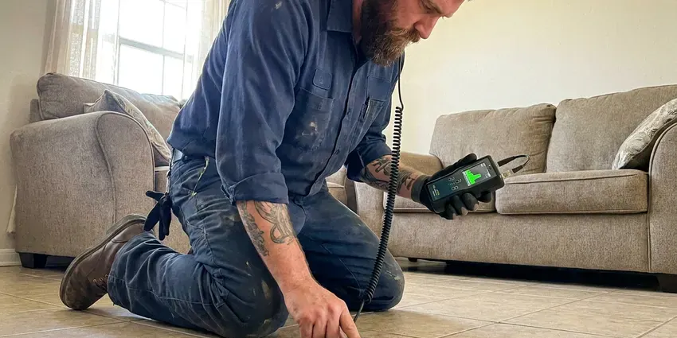

Water Damage Restoration in Lowell, MA
Burst line or overflowing tub in Lowell, MA? We pull the water, set dehumidifiers and check readings daily until the structure is dry.
- Wall Cavity Drying
- Insurance Documentation Support
- LGR Dehumidifiers
- Daily Moisture Readings

Water on the Floor in Lowell, MA? Call Now.
Call now and a crew will shut off the water, fix the leak and begin extraction as quickly as possible.
Water Damage Restoration in Lowell, MA
BWM Plumbing restores homes damaged by burst supply lines, slab leaks, water heater failures, washing machine hoses and toilet overflows. Because we are plumbers, the leak is fixed on the spot instead of waiting a day or two for a separate contractor to show up.
Work we handle every week:
- Emergency leak repair and water extraction from floors and carpet
- Structural drying with dehumidifiers, air movers and moisture mapping
- Infrared camera leak tracing

Additional Plumbing Maintenance Services in Lowell, MA
Our maintenance and specialty plumbing services in Lowell, MA protect your home year-round and extend the life of every system.


Customers
Why Choose BWM Plumbing for Water Damage Restoration in Lowell, MA?
Using one company for the plumbing repair and the restoration saves time and confusion. You get a single point of contact and one clear record of the leak, the readings and the repairs for your insurer. Adjusters like that.
- Moisture Mapping, Meters and a thermal camera find moisture behind walls and under floors.
- Pro-Grade Equipment, Truck-mounted extractors, LGR dehumidifiers and axial fans for cavity drying.
- Trained Technicians, Our restoration techs follow IICRC drying standards and the industry guidelines for contaminated water.
Citywide Coverage
Downtown condos, suburban two-story homes and rural houses on wells all fall in our Lowell area. Condos add a twist, since water often travels to the unit below and the HOA and both owners need documentation. We document both units.
Experienced Team
Restoration technicians on our crew are trained in water damage categories, drying science and mold prevention. They work alongside our licensed plumbers, so the leak and the drying are handled by one crew that talks to each other. That saves a day.
Safety-First Approach
Removed materials are disposed of properly, and rebuild work follows local building and plumbing codes. Permits are pulled for repairs that require them, and we schedule the inspections so the work is signed off before you close the claim. Your records stay complete.
Trusted Certified Lowell Plumbing Services Professionals
At BWM Plumbing, we take pride in licensed, certified plumbing services throughout Lowell, MA. Credentials matter in this trade. Every repair, install and maintenance visit follows strict safety and quality rules, and the plumbers doing the work carry recognized industry credentials.
Call Us Now PHCC Plumbing Contractor Recognition
PHCC Plumbing Contractor Recognition Better Business Bureau (BBB) Accreditation
Better Business Bureau (BBB) Accreditation Angi Certified Pro
Angi Certified Pro ISO 9001 Quality Management Certification
ISO 9001 Quality Management CertificationWater Damage Restoration in Lowell, MA
Foundation Water Damage Mitigation in Lowell, MA
Water pooling against a slab or soaking a crawl space can move soil and stress the structure. Tree roots and shifting fill around old clay or cast iron sewer laterals are a common cause of backups in established neighborhoods. We extract and dry what we can reach, then look at where the water came from, whether it was a plumbing leak, a downspout dumping at the wall or grading that slopes toward the house. The source gets addressed.

Kitchen and Appliance Leak Restoration in Lowell
Dishwashers, ice maker lines and sink supply lines can leak slowly under cabinets for weeks. By the time you notice a soft spot or a musty smell, the cabinet bases and subfloor may already be swollen and stained. Toe kicks come off first. That opening lets us blow dry air under the cabinets without tearing them out.
Insurance Claim Assistance in Lowell, MA
Adjusters want proof of what was wet, how wet and for how long. Before-photos, daily moisture logs by room and an itemized scope in the format insurers use all go into your file. You keep copies. We do not file the claim for you, but we can talk with your adjuster in Lowell, MA about what we found.
Mold Prevention and Remediation in Lowell
Warm, damp air speeds up mold growth after any leak. Our restoration process in Lowell includes antimicrobial treatment on wet framing and the back side of drywall, along with drying fast enough to stay ahead of the 24 to 48 hour window. Existing mold gets removed. Larger areas get containment.
Water Damage Restoration Costs and Insurance in Lowell, MA
Restoration costs depend on how much area is affected, the water category and how long materials stayed wet. A single bathroom caught early might cost a fraction of a whole floor with carpet, pad, drywall and cabinets coming out. Speed lowers the cost. Sudden leaks are often covered, slow ones often are not.
Commercial Water Damage Restoration in Lowell, MA
Offices, restaurants and retail stores in Lowell, MA lose money every day a space is closed. We can run extraction and drying after hours, set up containment so part of the space stays open, and bring enough equipment to dry a large floor plate in a few days. Your hours come first. Property managers get daily updates.
Frozen Pipe Water Damage in Lowell
Frozen pipes split, then leak hard once they thaw. Shutting off and draining outdoor faucets in the fall, and keeping cabinet doors open during cold snaps, prevents a lot of winter damage. Breaks tend to happen in outside walls, attics and crawl spaces, and the water may appear well away from the split. First we locate the break. Copper gets a soldered or press repair, and PEX gets a crimp or expansion fitting.

Mold Prevention After Water Damage in Lowell, MA
Mold can begin growing on damp drywall and wood within 24 to 48 hours. Even in dry weather, wall cavities and the space under cabinets stay damp for days without fans and dehumidifiers pushing air through them. Readings get logged every day. Antimicrobial goes on where needed.
Local Water Damage Crews Near Me in Lowell, MA
Nearby crews also mean easy return visits. We return daily during drying to read moisture and shift equipment as areas finish. Those visits are quick. Being close keeps them on schedule in Lowell.
Searching for water damage restoration near you in Lowell, MA? BWM Plumbing keeps extraction and drying gear on trucks stationed around the area. Being close matters. An hour-long response instead of a half-day wait often means a wall gets dried instead of cut.
BWM Plumbing at a Glance
- Licensed and insured plumbers serving Lowell, MA
- 24/7 emergency service with same-day scheduling
- Upfront, flat-rate pricing before work begins
- 4.9-star rated by 434+ Massachusetts customers
Lowell Map
Lowell Information
- Population
- 114,296
- Area codes
- 978/351/781
- Service area
- Lowell and towns within a 40 mile drive
- Nearby
- Lawrence, Methuen Town, Haverhill, Waltham
Water wicks up drywall about an inch an hour after a leak, so in Lowell, MA the first day of drying decides how much gets torn out.
Expert Services
Reach out to BWM Plumbing for honest, reliable plumbing from people who know the trade in Lowell, MA.
Our Specialized Plumbing Services in Lowell, MA
At BWM Plumbing, we handle the full list of plumbing services across Lowell, MA. From leak detection to full system installs, our team works fast and charges fair prices on homes and commercial properties alike. Explore our core services below:


Our Water Damage Routine in Lowell, MA
From the first call to the last reading, this is the order we work in in Lowell.
Call for Help
Call (857) 335-4894 when you find water. We send a team to your Lowell property fast.
Assess
Technicians find the source and map wet areas with moisture meters and a thermal camera.
Extract
Commercial extractors remove standing water, which shortens drying time.
Frequently Asked Questions About Water Damage Restoration in Lowell
Extraction and drying alone in Lowell, MA often runs $500 to $3,000. Structural repairs plus mold work can run $5,000 to over $20,000 based on rooms and materials. Water type changes the price. We estimate after the first assessment.
For a small leak, most people stay home. With sewage, mold or drying that covers the kitchen or the only bathroom, a few nights somewhere else is often easier and safer for the family. You will get our honest take.
We take calls 24/7, and our goal is to be at your Lowell property within a few hours. Often we get there sooner, especially when water is still actively running. Close the main valve.
Small spills on a hard floor, yes. Anything that soaked into drywall, carpet pad or subfloor is a different story, because household fans dry the surface while moisture stays trapped in the wall cavity and under the floor. Hidden water grows mold.
Minor jobs can wrap up in 2 to 3 days. Bigger losses that need demolition, several days of drying and a full rebuild can take several weeks from the first call to the final coat of paint. We give a timeline.
Any brand can fail. We see tank failures on Rheem and Bradford White heaters, hose and pump leaks on Whirlpool and Samsung washers, and door seal or supply leaks on Bosch and GE dishwashers. Old parts fail first.
Stains on ceilings, bubbling paint and soft spots in the floor are common in Lowell homes with hidden leaks. An unexplained jump in the water bill, a meter that spins with every fixture off, or a musty smell in one room all suggest water is going somewhere it should not. Have a plumber look.
Most homeowner's policies cover sudden and accidental water damage, like a burst pipe or a failed appliance. Outside flooding typically requires flood insurance, and long-running leaks are usually treated as maintenance. Check your coverage.
What Our Customers Say About Our Plumbing Experts

Mark T.
The floor drain in our office break room backed up every few weeks. The plumber ran a cable, then put a camera down and found roots at a joint about thirty feet out. Seeing it on the screen made the decision easy.
Drain Cleaning · Haverhill, MA
Angela D.
Our sump pump quit during a storm and the water was an inch from the basement carpet. BWM Plumbing put in a new pump with a battery backup that same evening. We have had two heavy rains since. It kicked on both times.
Sump Pump · Peabody, MAKaren W.
After our third pinhole leak in copper, we stopped patching. BWM Plumbing gave us a written plan room by room and repiped the house in PEX while we stayed in it. The crew covered our floors every morning and cleaned up every night.
Repiping · Lowell, MA
Carlos V.
Our house still had galvanized pipe, and upstairs the shower was a trickle. The crew repiped everything in PEX over three days and patched every drywall hole before they left. The pressure difference is night and day.
Repiping · Medford, MADiane F.
My kitchen faucet had dripped for months and I finally got tired of hearing it at night. BWM Plumbing came out the next morning, replaced the cartridge and the O rings, and tightened a loose base that was letting water under the sink.
Faucet Repair · Waltham, MA
Kevin O.
Before buying our house I paid for a sewer camera inspection. BWM Plumbing found a belly in the line that held standing water about forty feet from the cleanout. We used the video to get the sellers to fix it before closing.
Sewer Camera Inspection · Waltham, MA